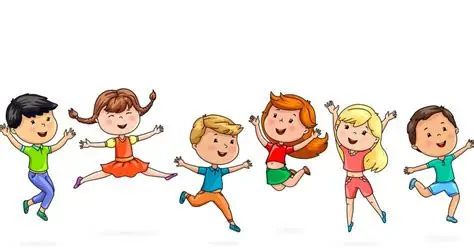

Somn suficient, odihnă și echilibru emoțional – elemente esențiale.Activitatea sportivă a copilului depinde foarte mult de mediul in care trăiește , felul în care mănâncă și se odihnește,cu siguranță toate aceste condițiții pot fi dificil de îndeplinit constant,dar cu voință încurajare și suport din partea familiei și a celor apropiați veți putea crește niște campioni🦾👌 